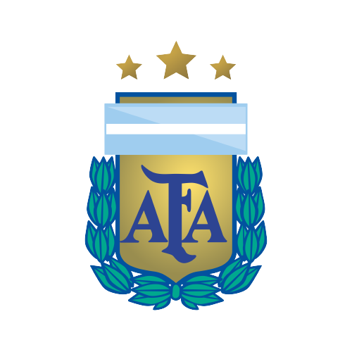
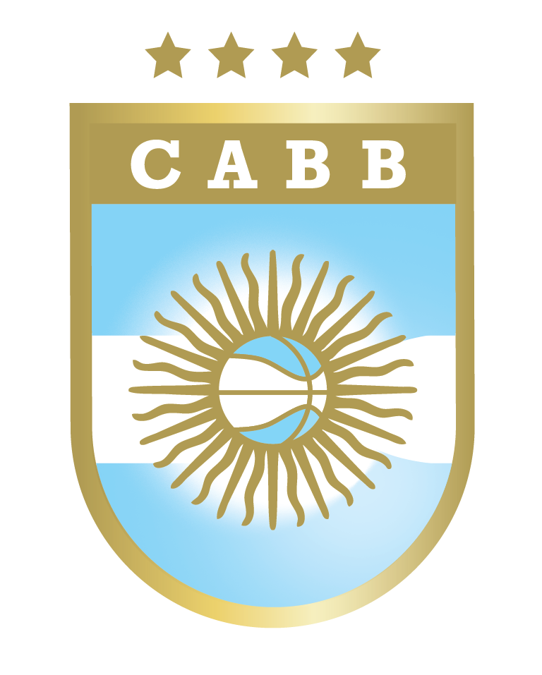
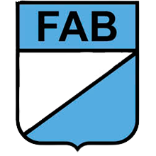

Descripcion
En esta pagina se encontrara una breve historia de los deportes mas vistos en argentina sus logros y noticias de la actualidad
Fútbol
El fútbol en Argentina es el deporte más popular y el país es reconocido como"futbolizad" porque forma parte de su identidad nacional. nueve de cada diez habitantes declaran ser simpatizantes de algún equipo de fútbol
La Asociación del Fútbol Argentino Fue fundada por Alejandro Watson Hutton en Buenos Aires, el 21 de febrero de 1893, con el nombre de Argentine Association Football League, es la más antigua de sus pares de Sudamérica y la octava del mundo. El fútbol de este país no sólo fue el pionero de América en organizarse, sino que en 1912 se convirtió también en el primero del continente en afiliarse a la FIFA, el ente rector de este deporte a nivel universal.
La Asociación del Fútbol Argentino es el ente rector del fútbol en Argentina, encargada de organizar y regular las distintas selecciones nacionales, y los campeonatos oficiales, en todas las modalidades del deporte en ese país, incluidas las ramas de futsal, fútbol playa y fútbol femenino. Perfiles oficiales
Para terminar con esta seccion queremos agregar que este deporte es el mas visto y el que mas sentimientos crea en los fans que dejan cualquier cosa para ir a alentar a su equipo.
Básquet
El primer impulsor de este deporte en nuestra tierra también tiene nombre y apellido: Philip Paul Philips. Llegó desde la YMCA de Estados Unidos para organizar las prácticas deportivas de la institución en el país, donde funcionaba desde 1902. Fue quien introdujo distintos deportes de origen norteamericano, como elvóleibol, el sóftbol y el béisbol. Pero fue el básquet el que contócon la mayor aceptación.
La Confederación Argentina de Básquetbol (CABB) es el organismo que rige la Selección Nacional de Argentina y las competencias nacionales de clubes de básquet. Pertenece a la asociación continental FIBA Américas y se encuentra asociada al Comité Olímpico Argentino.
Fue fundada el 30 de agosto de 1929, tiene su domicilio legal en la calle Montevideo 496 piso 9 de la Ciudad Autónoma de Buenos Aires.
El equipo nacional de basquet se encuentra en un mal momento despues de quedar fuera del mundial y con pocas chances de ir a los juegos olimpicos ya que tiene que ganar 2 torneos clasificatorios para poder ir
Boxeo
El boxeo en Argentina es un deporte que se práctica de forma amateur y profesional, cuenta en su haber con 47 campeones mundiales. El boxeo, junto con el fútbol, es el deporte más visto en Argentina
La Federación Argentina de Boxeo (también denominada por sus siglas como FAB) es el organismo que se dedica a regular las normas del boxeo en Argentina. Se fundó el 23 de marzo de 1920.
Se fundo el 23 de marzo de 1920 (103 años) y tiene su sede en Castro Barros 75, Ciudad Autónoma de Buenos Aires, Argentina.Paginas oficiales